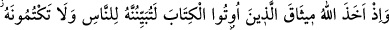
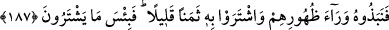

Hak Sübhânehû ve Teâlâ tarafından gelen bütün ibtilâlar (belâlar), nefsi arındırmak
ve halktan Hâlık’a yöneltmek içindir. Bu sebeple Hz. Peygamber (s.a.) şöyle buyurur:
“Benim gördüğüm eziyeti, hiçbir peygamber görmemiştir.”[168] Bu sözüyle Hz.
Peygamber (s.a.) benim arındırıldığım kadar hiçbir peygamber arındırılmamıştır, demek
istiyor gibidir. Hz. Peygamber’e: “Şu müşriklere bir bedduâ etseniz?” denildiğinde O:
“Ben sadece rahmet olarak gönderildim. Azap için değil.”[169] buyurmuştur. Netice-i
kelâm: İbtilâ, rahmet ve nîmettir. Nitekim Celâleddîn Rûmî der ki:
Sırtımdaki ağrı Hakk’ın ihsânıdır, beni uykudan
Sıçrayarak gece yarısı uyarır, ateş ve sancıdan
Tâ ki, ben manda gibi bütün gece uyumayayım
Diye Hak Teâlâ bana dertler bahşeder dâim.
Mallarınız ve canlarınız husûsunda deneneceksiniz, yani gerek cihad-ı asgar, gerekse
cihad-ı ekber tarzında mallarınızla ve canlarınızla cihad edip mallarınızı ve canlarınızı
Allah yolunda fedâ edip edemeyeceğiniz konusunda deneneceksiniz. “Sizden önce
kendilerine kitap verilenlerden,” yani zâhirî ilim ehlinden ve “ortak koşanlardan”
yani Kur’ân okuyucuların ve zâhidlerin riyakârlarından gıybet, kınama, yaptıklarınızı
çirkin görüp itiraz etme tarzında “çok incitici sözler duyacaksınız.” Eğer nefis ile
cihad etmeye, malınızı harcamaya ve insanların eziyetine “sabreder,” Allah’dan başka
her şeyden Allah’la “korunursanız, işte bunlar,” ulü’l-azm peygamberlerin de yaptığı,
“yapmaya değer işlerdendir.” Şu âyet-i kerîmede olduğu gibi: “Ey Muhammed, ulü’l-
azm peygamberler sabrettiği gibi, sen de sabret.” (el-Ahkâf, 46/35) Sabır ve takvâya
önem vermeyenler ise sadece birer iddiâcı olarak kalırlar.
İnsan için zordur değiştirmek huyunu
Kökte olan şeyin nasıl değiştirsin soyunu.
Tabiat ve karakter asıldır, huy da onun dalı
Şüphesiz dal, köke bağlı olarak uzamalı.
187. Allah kendilerine kitap verilenlerden; “Onu mutlaka insanlara
açıklayacaksınız, onu gizlemeyeceksiniz” diyerek söz almıştı. Onlar ise bunu kulak
ardı ettiler, onu az bir dünyalığa değiştiler. Yaptıkları alış-veriş ne kadar kötü!
Ey Muhammed, hani “Allah kendilerine kitap verilenlerden,” ki bunlar yahûdî ve
hıristiyan âlimleridir, kitaptaki Hz. Peygamber’in nübüvvetinin de içinde bulunduğu